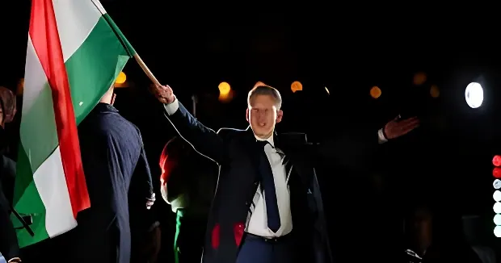

Le 12 avril 2026, Péter Magyar remporte les élections législatives hongroises avec une supermajorité des deux tiers, mettant fin à seize ans de règne de Viktor Orbán. Onze jours plus tard, le 23 avril, le veto hongrois sur le prêt européen de 90 milliards d'euros à l'Ukraine est levé et le prêt définitivement validé. Deux événements en cascade qui marquent un basculement historique, tant pour la Hongrie que pour la capacité de l'Union européenne à agir.
Viktor Orbán a gouverné la Hongrie sans interruption de 2010 à 2026, façonnant un régime que les politologues qualifient d'« illibéral » — un système maintenant la forme des élections tout en neutralisant systématiquement les contre-pouvoirs. Contrôle des médias, réforme judiciaire, modification des règles électorales à l'avantage du Fidesz, harcèlement des ONG : Budapest était devenu le laboratoire du populisme souverainiste en Europe.
Sur la scène européenne, Orbán a fait de la résistance à Bruxelles son fonds de commerce politique. Depuis l'invasion russe de l'Ukraine en 2022, il a refusé toute livraison d'armes à Kiev, maintenu ses liens énergétiques avec Moscou et utilisé son droit de veto comme levier de négociation permanent, bloquant sanctions, fonds et mécanismes d'aide.
En février 2024, Péter Magyar, ancien proche du système Fidesz, prend publiquement la parole pour dénoncer les pratiques du gouvernement. Inconnu jusqu'alors, il fonde le mouvement TISZA et mobilise des centaines de milliers de personnes. Aux élections européennes de juin 2024, TISZA talonne le Fidesz avec 29 % des voix contre 44 %. La dynamique s'emballe tout au long de 2025 : pour la première fois depuis 2010, un scénario d'alternance devient crédible.
Sa campagne s'articule autour de trois axes : la lutte contre la corruption, le redressement économique — la Hongrie a subi la pire inflation de l'UE après 2022 — et le réalignement européen du pays. Face à lui, Orbán mise sur la peur, diffusant notamment des vidéos générées par IA affirmant que Magyar enverrait les Hongrois combattre en Ukraine. La manœuvre ne prend pas.
Invasion russe de l'Ukraine. Orbán refuse toute livraison d'armes et maintient la dépendance énergétique au gaz et pétrole russes. La Commission commence à geler les fonds européens destinés à la Hongrie, invoquant des violations de l'état de droit.
Orbán quitte la salle du Conseil européen pour permettre l'ouverture des négociations d'adhésion de l'Ukraine à l'UE, mais bloque le prêt de 90 Md€ à Kiev. L'impasse dure plusieurs mois.
Magyar lance TISZA le 15 mars lors d'un grand rassemblement à Budapest. La Hongrie reste en dehors de tout consensus sur l'Ukraine. Orbán multiplie les déplacements non mandatés à Moscou, Pékin et chez Trump à Mar-a-Lago, irritant profondément ses partenaires européens.
L'oléoduc Druzhba, qui achemine le pétrole russe vers la Hongrie et la Slovaquie, est endommagé par une attaque de drone ukrainien. Budapest en fait un prétexte supplémentaire pour bloquer le prêt à Kiev.
Magyar remporte les législatives avec une supermajorité des deux tiers (138/199 sièges). Orbán reconnaît une défaite « douloureuse mais claire » après seize ans au pouvoir. Macron, von der Leyen et Merz le félicitent immédiatement.
Le veto hongrois est levé après réparation de l'oléoduc Druzhba. Le prêt de 90 Md€ à l'Ukraine est définitivement validé par l'UE. Kaja Kallas, cheffe de la diplomatie européenne, annonce : « L'impasse est levée. » Les premiers versements sont attendus dès que possible.
Le prêt validé le 23 avril 2026 constitue l'un des plus grands engagements financiers de l'histoire de l'UE envers un pays tiers. Il s'inscrit dans le cadre de l'« Ukraine Facility », mécanisme pluriannuel destiné à soutenir les finances publiques de Kiev, financer la reconstruction du pays et permettre à l'État ukrainien de continuer à fonctionner malgré la guerre. Sans ce prêt — et alors que les États-Unis ont suspendu leur aide depuis le retour de Trump en 2025 — l'Ukraine risquait de manquer de fonds en quelques semaines.
Budapest a maintenu son blocage pendant plusieurs mois en combinant plusieurs prétextes : désaccords sur la politique migratoire européenne, exigences de garanties sur les relations bilatérales avec Kiev, et — depuis janvier 2026 — l'endommagement de l'oléoduc Druzhba par un drone ukrainien, qui privait la Hongrie et la Slovaquie d'approvisionnements pétroliers russes. C'est la réparation de cet oléoduc par l'Ukraine qui a finalement dénoué l'impasse technique permettant la levée du veto le 23 avril.
Derrière ces prétextes successifs, la réalité du blocage hongrois relevait d'une stratégie plus large : utiliser le droit de veto comme instrument de négociation pour obtenir le dégel des fonds européens gelés (~29 Md€) en échange de concessions ponctuelles. Une logique de marchandage institutionnel que la défaite électorale d'Orbán a définitivement interrompue.
| Prétexte hongrois | Période | Dénouement |
|---|---|---|
| Politique migratoire UE | 2023–2024 | Négociations sans issue |
| Relations bilatérales HU-UA | 2024–2025 | Impasse diplomatique |
| Oléoduc Druzhba endommagé | Jan.–Avr. 2026 | Réparation → levée du veto |
| Défaite d'Orbán | 12 avr. 2026 | Changement de gouvernement imminent |
Le cas hongrois pose à l'UE une question structurelle : comment une union de 27 États peut-elle maintenir sa capacité d'action quand un membre utilise systématiquement le droit de veto comme levier de négociation ? Pendant plus de deux ans, Orbán a démontré qu'un seul État pouvait paralyser des mécanismes d'aide à un pays en guerre au nom d'intérêts nationaux — et énergétiques — étroitement liés à Moscou.
« La Hongrie a choisi l'Europe. L'Europe a toujours choisi la Hongrie. Ensemble, nous sommes plus forts. »
— Ursula von der Leyen, présidente de la Commission européenne, 12 avril 2026« Aujourd'hui, le peuple hongrois a dit oui à l'Europe. »
— Péter Magyar, discours de victoire à Budapest, 12 avril 2026Sa supermajorité des deux tiers lui donne théoriquement les mains libres pour défaire le système Orbán : révision constitutionnelle, remplacement des juges et dirigeants d'institutions nommés par le Fidesz, rétablissement de l'indépendance des médias. Magyar a promis de s'attaquer à la corruption, de renouer avec Bruxelles et de faciliter le déblocage des fonds européens gelés — ce qui lui permettrait de tenir ses promesses économiques envers les Hongrois.
Toutefois, Magyar n'est pas un atlantiste ni un soutien inconditionnel de l'Ukraine : comme Orbán, il a refusé d'envisager l'envoi d'armes à Kiev et s'oppose à l'adhésion de l'Ukraine à l'UE. Son réalignement européen est réel mais partiel — ce qui laisse ouvertes des tensions futures avec certains partenaires de l'Est.
En l'espace de onze jours — du 12 au 23 avril 2026 — la Hongrie est passée du statut de verrou systématique à celui d'État en transition pro-européenne, et 90 milliards d'euros d'aide à l'Ukraine ont été débloqués. Ce basculement ne doit pas masquer les fragilités structurelles qu'il révèle : l'unanimité requise au Conseil a permis à un seul État de paralyser la solidarité européenne pendant plus de deux ans. La chute d'Orbán clôt un chapitre de l'illibéralisme en Europe centrale — mais les règles institutionnelles qui l'ont rendu possible, elles, demeurent inchangées.